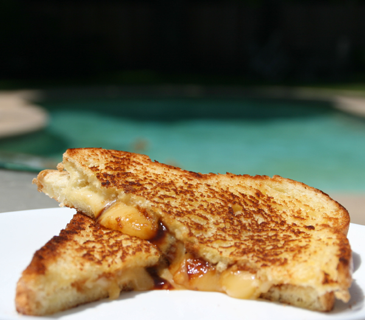

Best Grilled Cheese!

Few things in this life are as classic as a nice grilled cheese sandwhich.
Like other classics though, this can be amped up with just a little bit more effort!
By swapping out a few ingredients, and adding a bit more your grilled cheese game will
be elevated to the likes of which you will never return. Your grilled cheeses will be talked
about through your local street, if not the local town!
This recipe, like all others will shine best when you find out how to ame it your own.
You may want to cook the two pieces of bread side by side, you may want to use a specific
type of bread, or types of cheese that work for you. I give you full permission to alter
whatever you need. BUT USE MAYO to "butter" your bread. You won't regret it.
Ingredients
- Two slices of bread
- cheese, or cheeses of your choice
- fresh tomato
- fresh apple
- mayonaisse
Directions:
- Take both of your bread slices, and smother one side with mayoniasse. Trust me, you will never use butter for
a grilled cheese again
- Set aside your bread slices and chop up your cheese until manageable portions
- Slice up your apple and/or tomato into hearty slices
- Heat up a nonstick pan, you can use a little butter to melt in the pan, but it isn't needed
- Place one of your pieces of bread, mayonaisse side down, into the pan. Lay out your cheese on the side of bread facing up
- Use medium heat, and cook until you can slide around the bread without a spatula. Or until the mayo is caramelized
- Place your apple, or tomato slice on top of the cheese, and add the other slice of bread, mayo side up on top
- Carefully flip the sandwhich so the uncooked bread size is now on the bottom of the pan. Let cook until mayo is caramelized
- Flip as needed, and reduce heat to let cheese melt completely without burning the bread
- Take off pan, cut in half, and enjoy!